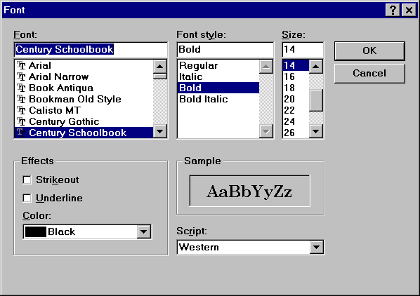
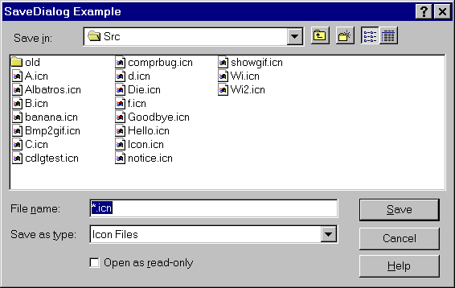

Version 13.1 of Unicon
for Microsoft Windows
Clinton L. Jeffery and Jafar Al-Gharaibeh
May 21, 2019
Unicon Technical Report #7d
Abstract
This report describes how to install and run the Unicon programming language
under the Microsoft Windows environment. It is the primary reference for
the Windows-specific language extensions to Unicon.
 |
http://unicon.org/utr/utr7.htm
Department of Computer Science
University of Idaho
Moscow, ID 83844
|
Contents
- Introduction
- Installing Windows Unicon
- Running Windows Unicon
- Testing the Installation
- More on Running Unicon
- Features of Windows Unicon
- Known Bugs and Limitations
- Reporting Problems...or Successes
The Microsoft Windows implementation of Version 13.1 of Unicon runs on
computers with a 32-bit or 64-bit Windows operating system. It has been
tested primarily on Windows 10 and Windows 7, with some limited testing on
older versions such as Windows XP.
This implementation of Unicon is an open source project under the GNU
license; it may be copied and used with few restrictions. The Unicon
Project makes no warranties of any kind as to the correctness of this
material or its suitability for any application. The responsibility for the
use of Unicon lies entirely with the user.
The basic reference for Unicon is the book Programming with Unicon [1].
This book is available from the Unicon Project web site at
unicon.org. The graphics facilities are
detailed in a separate report [2]. Unicon is an open source product based
on the volunteer work of many people; final responsibility for this release
rests with Clinton Jeffery of University of Idaho and Jafar Al Gharaibeh of
Architecture Technology Corporation. Send requests, and bug reports to
jeffery@cs.uidaho.edu. General Unicon language questions can be
sent to unicon-group@lists.sourceforge.net, which is a
moderated low-volume mailing list. Only list members can post messages
to the list.
Windows Unicon is distributed as a single executable installer file 14+ MB
in size. Two sets of the binaries are available, 32-bit and 64-bit, from
sourceforge.net/projects/unicon/files/. 32-bit binaries might
run on 64-bit Windows, but 64-bit Windows binaries will not run on 32-bit
Windows. Once the binaries are downloaded, run the installer
(setup-unicon*.exe) which guides you through the process of setting up
Unicon for Windows.
During installation, you will be asked for a drive and directory into which
the Unicon files will be installed, which defaults to
C:\UNICON. Files will be installed into
several subdirectories of the location you specify.
Installation also results in the creation
of a Windows Unicon program group with a set of icons that allow you read
on-line documentation, uninstall the software, and launch Windows Unicon.
Within the directory that Unicon was installed, the most important
subdirectory is the bin directory, which contains the
Unicon system binaries. Several executable binary files are required
to use Unicon, including the executor and the compiler that produces
virtual machine code files for the executor. The executor and
compiler can be invoked from an integrated development
environment called Ui, a software tool that
provides a visual interface to the programming process.
Applications that provide a graphical interface are usually
constructed by means of a visual interface builder called IVIB, a
drawing program that generates Unicon code for a program's user interface.
The following table summarizes the contents of the bin
directory:
- unicon.exe
- Unicon VM compiler
- icont.exe
- Icon VM compiler
- iconx.exe
- Icon VM executor
- ivib.exe
- Improved Visual Interface Builder, constructs graphical user interfaces
- ui.exe
- Unicon IDE (integrated development environment)
- wunicon.exe, wicont.exe, wiconx.exe
- Win32 versions, used internally by Ui, do not require a console
Important! Unicon's bin directory, normally
C:\UNICON\BIN
usually must be added to your PATH specification. This is normally done by
the installer program, but it can also be done through the Control Panel,
or on the command line, when necessary.
Windows Unicon may be used by means of the programming environment, Ui.
You may also invoke the compiler and run programs directly from
the command-line.
This section provides a brief discussion of the command-line tools.
Instructions on using the programming environment are given in
UTR 12.
Command line execution of Unicon programs is similar on many platforms and is
described in the Unicon Programming Language book and other reports. Windows
Unicon includes a command-line compiler (unicon) and virtual-machine
interpreter (iconx) that run from the command-line.
For example, an Unicon program in the file prog.icn is compiled into
virtual machine "icode" by the command:
unicon prog.icn
The extension .icn is optional on the command line, since the compiler
assumes the .icn extension by default. For example, it is
sufficient to use
unicon prog
Windows Unicon also includes a compiler (wicont) and virtual-machine
interpreter (wiconx) that can be invoked from the command-line,
but are usually invoked by Ui. These executables, unlike the command-line
versions, do not require a console window (cmd.exe), and thus are useful
for creating programs like Ui that are launched from a shortcut or menu.
The instructions below
refer to icont and iconx, but generally would also be true for wicont
and wiconx.
The Windows icode files that result of compilation have the extension .exe,
for example, the above compilation would produce a file prog.exe.
The program may then be executed as:
prog
Alternatively, unicon can be instructed to execute the icode file after
translation by appending a -x to the command line, as in
unicon prog.icn -x
If unicon is run with the -x option, the file prog.exe is left and can be
run subsequently using an explicitly named executor as described above.
There are a few programs included in the distribution that can be used for
testing the installation and getting a feel for running Unicon. They live
in a subdirectory tests\samples under the Unicon installation directory.
hello.icn
This program prints the Unicon version number, time, and date. To run this
test, launch the Ui program, open file hello.icn, and select the Make
and Run menu options. To test the command line tools:
unicon hello
hello
Note that this can be done in one step with
unicon hello -x
roman.icn
This program converts Arabic numerals to Roman numerals. To run this
test, launch the Ui program, open file roman.icn, and select the Make
and Run menu options. To test the command line tools:
unicon roman -x
and provide some Arabic numbers from your console.
If these tests work, your installation is probably correct and you should
have a running version of Windows Unicon.
For simple applications, the instructions for running Unicon given in Section
3 may be adequate. The Unicon compiler supports a variety of options that
may be useful in special situations. There also are several aspects of
execution that can be controlled with environment variables. These are
listed here. If you are new to Unicon, you may wish to skip this section on
the first reading but come back to it if you find the need for more control
over the translation and execution of Unicon programs.
5.1 Arguments
Arguments can be passed to the Unicon program by entering them in Ui's
Arguments... item in the Run menu, or appending them to the command
line. Such arguments are passed to the main procedure as a list of strings.
For example,
prog text.dat log.dat
runs the icode file prog.exe, passing its main procedure a list of two
strings, "text.dat" and "log.dat". The program also can be translated and
run with these arguments with a single command line by putting the arguments
after the -x:
unicon prog -x text.dat log.dat
These arguments might be the names of files. For example, the main procedure
might begin as follows:
procedure main(args)
in := open(args[1]) | stop("cannot open file")
out := open(args[2], "w") | stop("cannot open file")
.
.
.
5.2 The Compiler
The Unicon compiler can accept several Unicon source files at one time.
When several files are given, they are translated and combined into a single
icode file whose name is derived from the name of the first file. For
example,
unicon prog1 prog2
translates the files prog1.icn and prog2.icn and produces one icode file,
prog1.exe. In addition to supplying files on the command line, files may be
linked or included using appropriate commands in the source file.
A name other than the default one for the icode file produced by unicon can
be specified by using the -o option, followed by the desired name. For
example,
unicon -o probe prog
produces the icode file named probe.exe rather than prog.exe.
If the -c option is given to unicon, the translator stops before producing
an icode file and an intermediate ``ucode'' file with the extension .u is
left for future use (normally they are deleted). For example,
unicon -c prog1
leaves prog1.u, instead of producing prog1.exe. These ucode
files can be used in a subsequent unicon command by using the .u name. This
saves translation time subsequently. For example,
unicon prog2 prog1.u
translates prog2.icn and combines the result with the ucode files from a
previous translation of prog1.icn.
Ucode files also can be added to a program using the link declaration.
The informative messages from the translator can be suppressed by using the
-s option. Normally, both informative messages and error messages are sent
to standard error output.
The -t option causes &trace to have an initial value of -1 when the icode
file is executed. Normally, &trace has an initial value of 0.
The option -u causes warning messages to be issued for undeclared
identifiers in the program.
When an icode file is executed, several environment variables are examined
to determine execution parameters. The values assigned to most of these
variables should be numbers.
Environment variables are particularly useful in adjusting Unicon's storage
requirements. Particular care should be taken when changing default values:
unreasonable values may cause Unicon to malfunction.
The following environment variables can be set to adjust Unicon's execution
parameters. Their default values are listed in parentheses after the
environment variable name. Percentages listed are percentages of the
physical main memory available on the system.
- BLKSIZE (1%)
- This variable determines the size, in bytes, of the
initial region in which Unicon allocates lists, tables, and other objects. If
additional block regions are needed, they may be smaller.
- COEXPSIZE (.01%)
- This variable determines the size, in
words, of each co-expression block.
- ICONFONT (fixed)
- This variable contains the name of the default
font used by Windows that are opened. Any fixed-pitch font may be the
default. Example syntax is:
set ICONFONT=Lucida Sans Typewriter
- IPATH (undefined)
- This variable contains a list of directories,
separated by semicolons. The directories are searched for library files specified
by link declarations, as well as imported packages and inherited classes.
Unicon system directories ipl/lib, uni/lib, plugins/lib, uni/gui, and uni/3d are
added onto the end of any user-supplied IPATH.
- LPATH (undefined)
- This variable contains a list of directories,
separated by semicolons. The directories are searched for header files specified
by preprocessor $include directives. Unicon system directories ipl/incl,
uni/lib, plugins/lib, uni/gui, ipl/gincl, and ipl/mincl are added onto the end of any
user-supplied LPATH.
- MSTKSIZE (0.25%)
- This variable determines the size, in words,
of the main interpreter stack.
- NOERRBUF (undefined)
- If this variable is set, &errout is not buffered.
- STRSIZE (1%)
- This variable determines the size, in bytes, of
the initial region in which strings are stored. If additional string regions
are needed, they may be smaller.
- TRACE (undefined)
- This variable initializes the value of &trace.
If this variable has a value, it overrides the translation-time -t option.
- WICONLOG (undefined)
- This variable contains the name of a file to
which output from wicont and wiconx will be written after their execution
completes.
Windows Unicon supports all the features of prior versions of Unicon and
Version 9.4 of Icon, including graphics facilities, with the following
exceptions and additions:
6.1 Native Windows User Interface Access
Version 13 of Windows Unicon provides the following built-in user interface
components that make use of native Windows features. In some cases,
the facilities described here are integrated into the Unicon gui classes
so that they are used automatically in Unicon programs
that provide a visual interface. This section summarizes features;
the following section provides a reference guide.
The goal of the native facilities is not to
provide the entire Windows repertoire, any more than the entire X Window
repertoire is provided to UNIX users. Instead, features have been
chosen that are (1) important to the Windows look and feel,
(2) general enough to be implementable on other platforms, and
(3) can co-exist or be integrated with existing IPL facilities.
These facilities, and the "Wu" IDE that uses and demonstrates them,
may be more accessibility-friendly than Unicon's normal GUI interface.
Menus
A menu bar is created with a call like:
WinMenuBar(W, ["&File", "&Open", "&Save", "E&xit"],
["&Edit", "C&ut", "&Paste", "C&opy"],
["&Help", "&About"])
This function converts approximately the top text line of the window
into a menu bar. The appearance of the above example is given
in Figure 5. When menu items are selected, they are produced
as entire strings (such as "&Open") by Event().

Figure 5: a Windows menu bar
Scroll Bars
A scroll bar is created with a call like
WinScrollBar(W, "sb_1", x, y, wd, ht)
This function places a scrollbar with a particular size and position,
which default to a standard size on the right edge of the window.
The appearance of a typical scroll bar is illustrated in Figure 6.
When scroll bar activity takes place, the scroll bar's string id is
produced (in this case, "sb_1") by Event(), and
&x and &y are both set to the scroll bar's
position.

Figure 6: a Windows scroll bar
Buttons
A button is created with a call like
WinButton(W, "hello", x, y, wd, ht)
This function places a button with a particular size and position.
The size defaults to a standard size large enough display the
button's label.
The appearance of a pair of buttons is illustrated in Figure 7.
When a button is pressed, the button's string label is
produced (in this case, "hello") by Event().

Figure 7: a pair of Windows buttons
Common Dialogs
Several common dialogs are provided for selecting colors, fonts,
and files to open or save. These functions return an attribute
value or a file name. Examples are illustrated in Figures
8-11.

Figure 8: the Windows color dialog

Figure 9: the Windows font dialog

Figure 10: the Windows open dialog

Figure 11: the Windows save dialog
6.2 Native Windows Facilities Function Reference
The following functions provide a small but useful subset of the
native Windows interface. They are useful mainly for applications
that require a native look and feel, and since they are nonportable,
they are deprecated. Graphical interfaces are best created for Unicon
applications using the Improved Visual Interface Builder and its GUI
class library.
fattrib(x, s) - get file attribute
This Windows Icon function is subsumed by stat() and
is no longer built-in.
You can add the library declaration "link fattrib" to your
program if you don't want to change your fattrib() calls.
WinAssociate(s) - return the application associated with an extension
This Windows Icon function produces the name of the program associated
with a string file extension supplied in parameter s.
WinButton(s, x, y, wd, ht) - install button
WinButton(s, x, y, wd, ht) installs a pushbutton on w with label s. Whenever the button is
clicked, the string label s is placed on the window's event queue.
| Defaults: | wd | width of text in system font + 10 pixels |
| | ht | height of text in system font * 7/4 |
WinColorDialog(s) - select color
WinColorDialog(s) executes the Windows common dialog for color selection
with default color s. Returns a string attribute value corresponding to user's selection,
or fails if the user selects Cancel. This function is called from the Unicon Program Library
procedure of the same name.
WinEditRegion(s, s2, x, y, wd, ht) - manipulate edit region
WinEditRegion(s, s2, x, y, wd, ht) manipulates a Windows edit region named s.
This flexible editor is limited to text that is < 32Kbytes in length.
The operation performed depends on argument s2. If argument s2 is omitted,
WinEditRegion(s) returns a string containing the current contents of
region s. If s2 is supplied and does not start with a !, it is a string to
be edited; lines are separated by \r\n. s2 strings starting with ! are
commands:
- WinEditRegion(s, "!clear") clears the current selection..
- WinEditRegion(s, "!copy") copies the current selection.
- WinEditRegion(s, "!cut") cuts the current selection.
- WinEditRegion(s, "!paste") pastes the current selection.
- WinEditRegion(s, "!modified") succeeds if region s has been modified since it was last assigned
a value
- WinEditRegion(s, "!setsel") sets the selection using parameters x and y as indices..
- WinEditRegion(s, "!undo") undoes the previous operation, if possible.
WinFontDialog(s) - Execute Windows common dialogs for font selection,
with default font s. Returns a string attribute value corresponding to user's selection,
or fails if the user selects Cancel.
WinMenuBar(w, L1, L2, ...) - install a menu bar on w.
Each list, which presently may contain
only strings, describes one popup menu on the menu bar. The first element of the list is the menu's
name that appears on the bar. The remaining elements are the menu options for that popup menu.
After a menu bar is installed, Event() returns the strings. For example, after a call:
WinMenuBar(["File", "Open", "Save"], ["Help", "About"])
the menu bar would show File and Help menus, and anytime the user selected the Open, Save, or
About menu options, "Open", "Save", or "About" would be queued on the event list.
Ampersand is used to specify keyboard shortcuts, as in ["&File", "&Save", "Save &As..."].
WinOpenDialog(s1,s2,i,s3,j,s4), WinSaveDialog(s1,s2,i,s3,j,s4) - Execute Windows common dialogs for
opening and saving files.
These functions open typical dialogs to perform file selection for reading
and writing, respectively. s1, s2, and i are the caption, default value,
and text entry field size. s3 and j
specify the filter string and its index. s3 is a string of alternating names and filters, separated and
ending in |, of the form "name1|filter1|name2|filter2|...|". It defaults to "All Files(*.*)|*.*|".
j supplies the default extension index within s3; it defaults to first pair in filter string. s4 is the directory to show when the dialog is opened;
it defaults to use Windows version-specific rules.
These functions return the file name chosen.
They fail if the user selects Cancel.
WinPlayMedia(w, s1, s2, ...) - play a multimedia resource.
String arguments ending in .wav are
presumed to be wave sound file names. Strings ending in .mid or .rmi are presumed to be MIDI
files. All other strings are treated as MCI command strings, and processed by the Windows Media
Control Interface.
Windows Unicon has a number of limitations inherent to the platform, as well
as some remaining bugs that may get fixed.
General
Graphics Facilities
- Attribute linestyle is ignored by Windows when the linewidth is greater
than 1; linewidths greater
than 1 are always drawn using a solid line style.
- Attribute fillstyle does not correctly interpret the value masked.
When masked fills are
requested, textured fills are performed instead.
- In addition to the standard values "dashed", "striped", "solid",
attribute linestyle has values
"longdashed", "dashdotted", and "dashdotdotted" corresponding to
Windows' standard pen styles
for longer dashes and alternating longer and shorter (Icon-standard
size) dashes in lines.
- Mutable colors do not work unless the window is the active window, and
sometimes do not work as expected.
- Colors are never freed.
- Windows may use dithered colors, resulting in an unattractive appearance
in applications where solid colors are expected. Most colors are
dithered on (now vanishingly rare, but still in use) 16-color
machines (not 16-bit color: 16-color), and color-intensive
applications are ugly or unusable on those systems.
- References to attributes display, iconpos, iconimage, iconlabel, and
visual always fail, as do calls to function Default().
- Attribute pointer supports only "arrow", "cross", "ibeam", "uparrow",
and "wait", depicted by the following images. The appearance of
these pointers varies slightly on different versions of Windows.
- Although some program examples using attribute drawop work, drawop does
not work the same way as on other platforms.
Problems with Windows Unicon should be noted on a trouble report form
(TROUBLE.TXT, included with the distribution) and sent to
Clinton Jeffery
Department of Computer Science
University of Idaho
P.O. Box 441010
Moscow, ID 83843-1010
U.S.A.
(208) 885-4789 (voice)
(208) 885-9052 (fax)
jeffery@cs.uidaho.edu
In order to minimize response times, the preferred method for reporting
problems is by e-mail. I would also like to hear suggestions and success
stories from satisfied users; e-mail is great but letters and postcards are
even better for this kind of feedback. Think of TROUBLE.TXT as a
"registration" for your free software.
Unicon is a superset of and is based on the Icon programming language,
whose design and implementation was supported, in part, by grants from
the National Science Foundation. Many people contributed to the Icon
(and therefore Unicon) implementations. Most of the credit for coordinating
Icon's implementation goes to Ralph Griswold. Gregg Townsend has made
extensive contributions and currently maintains Icon.
Much of this work was made possible by support from the National Library of
Medicine Specialized Information Services division, under the direction of
Phillip Thomas.
1. Clinton Jeffery, Shamim Mohamed, Jafar Al Gharaibeh, Ray Pereda, and
Robert Parlett, Programming with Unicon, 2nd edition,
http://unicon.org/ub/ub.pdf, 2016.
2. Gregg M. Townsend, Ralph E. Griswold, and Clinton L. Jeffery, Graphics
Facilities for the Unicon Programming Language Version 9.3, The Univ. of
Arizona Icon Project Document IPD281, 1996.